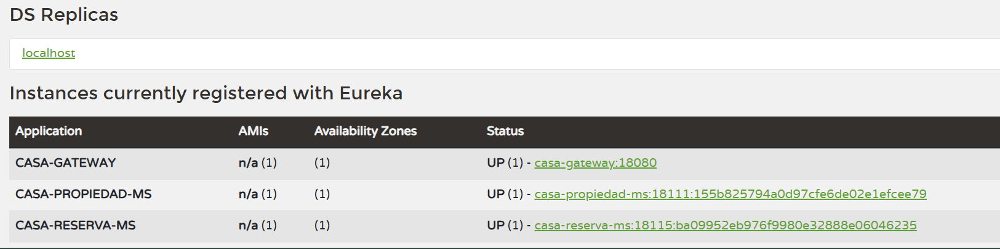
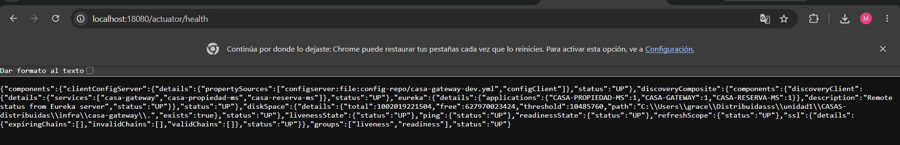
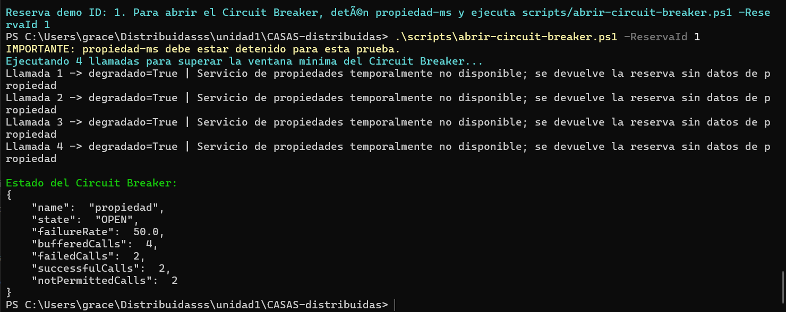
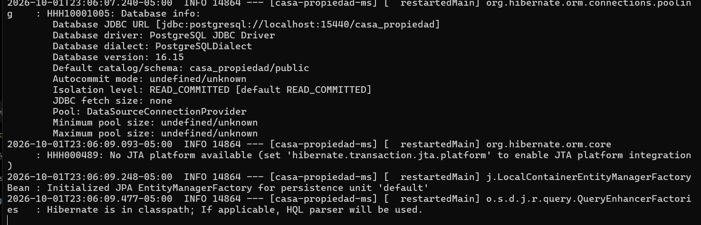

S06 · Comunicación síncrona resiliente entre servicios¶
Tarea 1 — Feign y Circuit Breaker¶
Datos de la actividad¶
| Campo | Información |
|---|---|
| Grupo | 9 |
| Ciclo | V |
| Integrantes | Alanguia Japura Miguel Angel · Jannys Graciela Navarro Acrota · Olger Meza Rupa |
| Proyecto | CASA O NADA |
| Tema | OpenFeign + Eureka + Circuit Breaker |
1. Resumen de la actividad¶
La actividad implementa comunicación síncrona entre casa-reserva-ms y casa-propiedad-ms. La reserva necesita validar y consultar datos de una propiedad, por lo que utiliza OpenFeign. La ubicación del servicio no se escribe de forma fija: se resuelve mediante Eureka. Finalmente, Resilience4j Circuit Breaker protege el flujo cuando propiedad-ms deja de responder.
2. Evidencia técnica¶
Cada captura se ubica junto al paso que demuestra, siguiendo el mismo formato de evidencias utilizado en la Unidad I.
Bloque 1 — Registro y descubrimiento de servicios¶
Antes de ejecutar la comunicación Feign se verificó que los componentes principales estuvieran registrados en Eureka.
Evidencia 01 · Servicios registrados en Eureka¶

Descripción. El panel de Eureka muestra CASA-GATEWAY, CASA-PROPIEDAD-MS y CASA-RESERVA-MS con estado UP. Esto confirma que los microservicios pueden descubrirse mediante sus nombres lógicos.
Bloque 2 — Verificación de infraestructura¶
Evidencia 02 · Gateway saludable y conectado a Eureka¶

Descripción. La consulta a localhost:18080/actuator/health devuelve estado general UP. En discoveryComposite aparecen los tres servicios registrados, verificando que el Gateway participa correctamente en el descubrimiento.
Bloque 3 — Comunicación declarativa con OpenFeign¶
El flujo probado fue el siguiente:
Cliente
↓
Gateway
↓
reserva-ms
↓ OpenFeign + Eureka
propiedad-ms
↓
validación de propiedad
↓
reserva + detalle enriquecido
Con propiedad-ms disponible, la prueba automática creó una reserva y obtuvo su detalle enriquecido. El resultado indicó degradado=false y el mensaje Propiedad consultada correctamente desde propiedad-ms.
| Comprobación | Resultado |
|---|---|
Comunicación reserva-ms → propiedad-ms |
Correcta |
| Descubrimiento por Eureka | Correcto |
| Reserva creada | Correcta |
| Detalle de propiedad | Disponible |
| Modo degradado | false |
| Estado inicial del Circuit Breaker | CLOSED |
Bloque 4 — Circuit Breaker y fallback¶
Para demostrar resiliencia se detuvo propiedad-ms y se realizaron llamadas repetidas. En lugar de provocar una caída total, reserva-ms devolvió una respuesta degradada y el Circuit Breaker alcanzó el estado OPEN.
Evidencia 03 · Circuit Breaker en estado OPEN¶

Descripción. Las cuatro llamadas de prueba muestran degradado=True y el mensaje de servicio temporalmente no disponible. El estado final es OPEN, con failureRate: 50.0, 4 llamadas registradas, 2 fallidas, 2 exitosas y 2 no permitidas. Esto evidencia que el circuito deja de insistir sobre una dependencia caída y activa el fallback.
¿Por qué el failureRate es 50 %?¶
La ventana contiene llamadas exitosas realizadas antes de detener propiedad-ms y llamadas fallidas posteriores. Al alcanzar el umbral configurado, el Circuit Breaker abre el circuito; las siguientes peticiones ya no intentan llegar al servicio caído y se resuelven mediante el fallback.
Bloque 5 — Recuperación del servicio¶
Después de la prueba de fallo se volvió a iniciar propiedad-ms para comprobar que el componente pudiera regresar al ecosistema.
Evidencia 04 · Propiedad-ms recuperado¶

Descripción. La consola de casa-propiedad-ms muestra la conexión con PostgreSQL, la inicialización de JPA y la carga del contexto del servicio. Esta evidencia corresponde al restablecimiento de la dependencia utilizada por reserva-ms después de provocar la apertura del Circuit Breaker.
3. Reproducción técnica¶
- Levantar Config Server, Eureka, Gateway,
propiedad-msyreserva-ms. - Confirmar en Eureka que Gateway, Propiedad y Reserva estén
UP. - Ejecutar el script de pruebas para crear la propiedad y la reserva.
- Confirmar que la consulta Feign devuelve el detalle enriquecido con
degradado=false. - Detener
propiedad-ms. - Ejecutar
scripts/abrir-circuit-breaker.ps1 -ReservaId 1. - Verificar las respuestas degradadas y el estado
OPEN. - Reiniciar
propiedad-msy comprobar su recuperación.
4. Hallazgo técnico¶
La comunicación síncrona introduce una dependencia temporal: si reserva-ms espera indefinidamente a propiedad-ms, un fallo remoto puede propagarse. El Circuit Breaker evita esa propagación al detectar fallos, abrir el circuito y utilizar una respuesta alternativa controlada.
5. Reflexión técnica¶
Feign simplifica la llamada entre microservicios y Eureka evita depender de direcciones físicas. Sin embargo, el descubrimiento por sí solo no resuelve las caídas. La combinación Feign + Eureka + Circuit Breaker permite comunicación declarativa, descubrimiento dinámico y tolerancia a fallos.
6. Preguntas de defensa¶
| Pregunta | Respuesta |
|---|---|
| ¿Para qué se usa Feign? | Para declarar un cliente HTTP y consumir otro microservicio con menos código manual. |
| ¿Qué aporta Eureka? | Permite localizar servicios por nombre lógico. |
| ¿Qué problema resuelve el Circuit Breaker? | Evita insistir continuamente sobre un servicio que está fallando. |
¿Qué significa OPEN? |
El circuito está abierto y bloquea temporalmente llamadas hacia la dependencia fallida. |
| ¿Qué hace el fallback? | Devuelve una respuesta controlada cuando la llamada remota no puede completarse. |